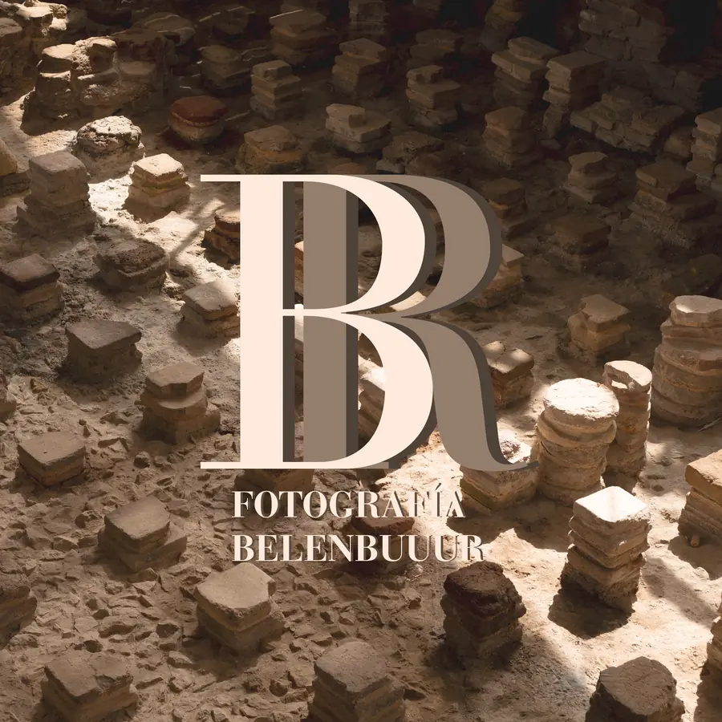
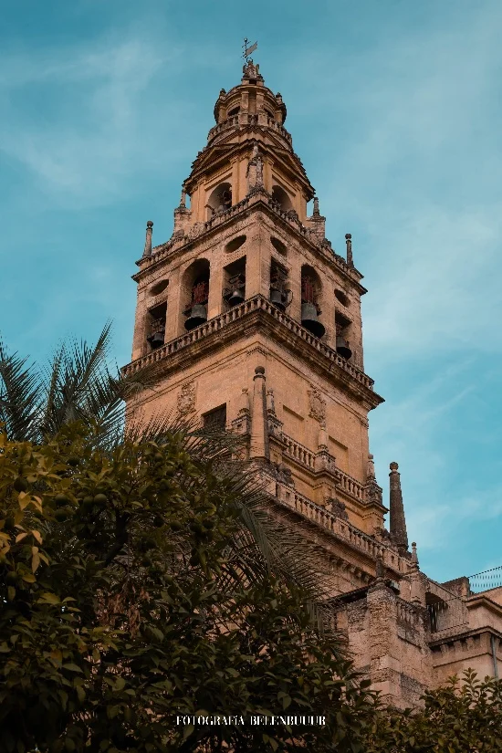
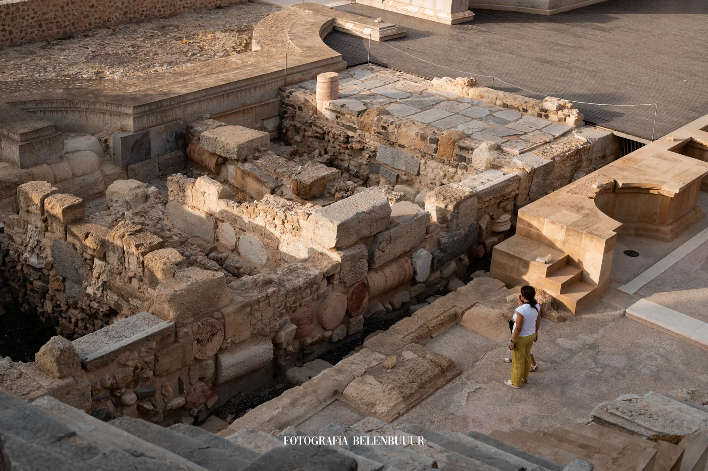
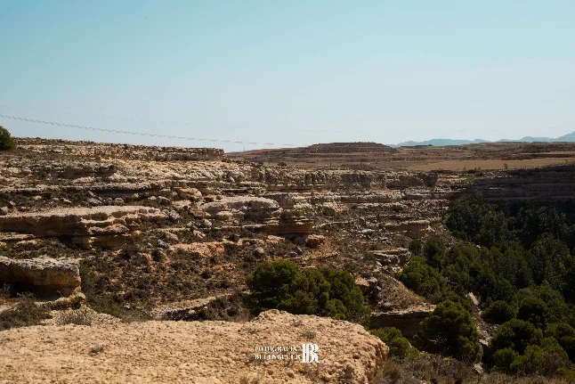
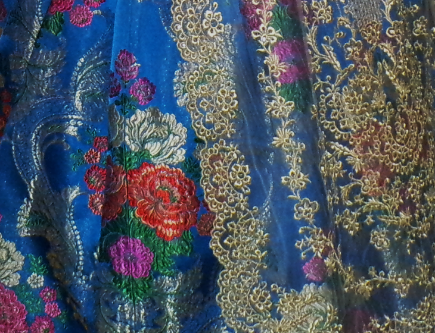
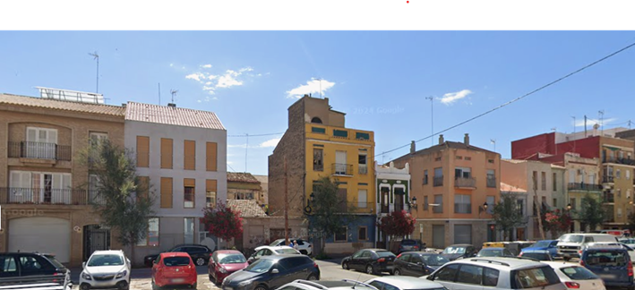
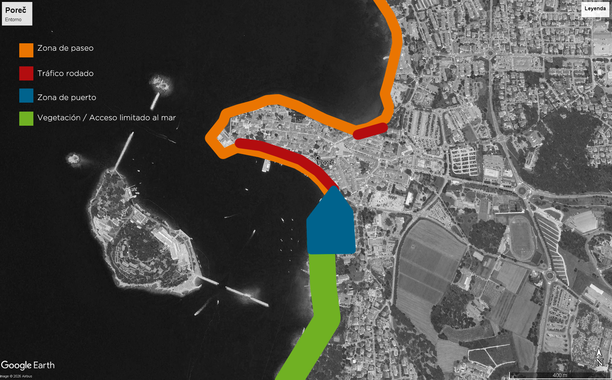

Hospitales y casinos
Una reflexi?n de Arquibuuur sobre los hospitales, el efecto casino y la arquitectura que cuida de pacientes y acompa?antes.
Leer m?s ?Historias, reflexiones y momentos capturados a través del objetivo.

Una reflexi?n de Arquibuuur sobre los hospitales, el efecto casino y la arquitectura que cuida de pacientes y acompa?antes.
Leer m?s ?
Un viaje tranquilo por Córdoba: la Mezquita-Catedral, el Alcázar, la Sinagoga y el conjunto y museo de Madinat Al-Zahra.
Leer más →
Tres días entre amigos para descubrir Cartagena: el Teatro Romano, el Foro, la arquitectura de la ciudad y una despedida en Cabo de Palos.
Leer más →
Cuatro días en familia, incluido el de cuatro patas, entre la naturaleza, los animales y la arquitectura de Huesca, Ordesa, Canfranc y Jaca.
Leer más →
Una reflexión de Festibuuur sobre la pérdida de color en los trajes de fallera, las modas y la influencia de las redes sociales.
Leer más →
Una reflexión de Arquibuuur sobre los gestos repetitivos, los patrones rígidos y las tendencias que amenazan la identidad de nuestras ciudades.
Leer más →
Cinco años más tarde, retomamos la colección viajando fuera de España. Análisis de la relación de Poreč con el mar: una ciudad que lo muestra siempre como algo lejano.
Leer más →
Todos los posts de la etapa anterior de Belenbuuur siguen disponibles en el blog original de WordPress.
Ver archivo →